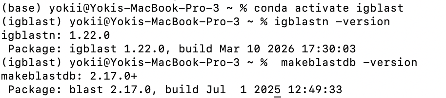
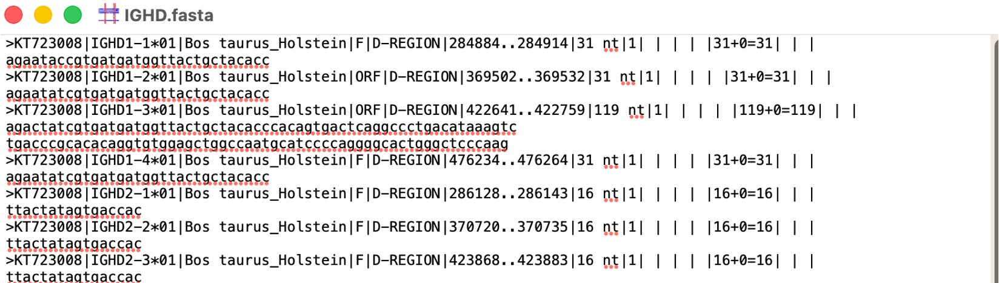
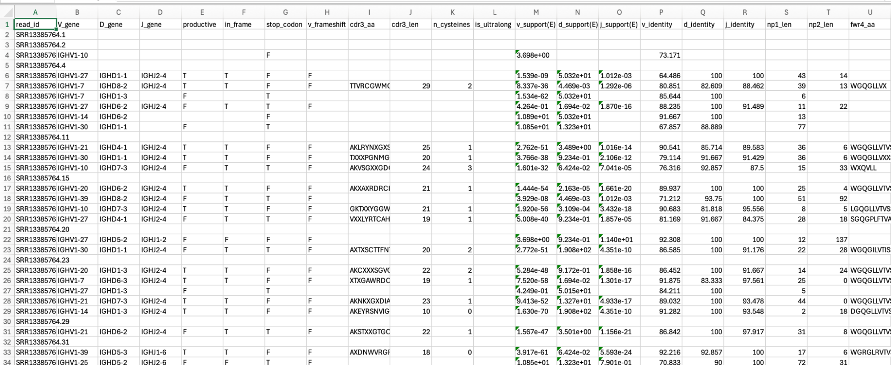

Setting up IgBLAST for a custom organism (bovine)
A reproducible procedure for configuring NCBI IgBLAST to annotate a non-model organism (Bos taurus), following the official custom-organism protocol. IgBLAST ships with built-in support for human, mouse, rat, rabbit and rhesus monkey only.
0Software and versions
| Tool | Version used | Source |
|---|---|---|
igblastn | 1.22.0 | bioconda |
makeblastdb (BLAST+) | 2.17.0 | bioconda |
| Python (+ Biopython) | 3.x | conda-forge |
1Install IgBLAST (via conda)
bash# dedicated environment with IgBLAST, BLAST+ and Biopython
conda create -n igblast -c conda-forge -c bioconda igblast blast biopython
conda activate igblast
# verify
igblastn -version # expect: igblast 1.22.0
makeblastdb -version # expect: makeblastdb 2.x
The bioconda igblast package installs the binaries plus the built-in data
(internal_data/, optional_file/) under $CONDA_PREFIX/share/igblast/;
the custom organism is added there in Step 5. makeblastdb comes from the separate
blast package. Both tools resolve only after conda activate igblast.

igblast env: igblastn 1.22.0 and makeblastdb 2.17.0+.
In (base) the igblastn binary is not on PATH, so activate the env first.2Obtain and prepare the germline V, D, J sequences (IMGT)
Download bovine IGHV, IGHD and IGHJ from
IMGT,
one IMGT-gapped FASTA per class: IGHV.fasta (28 seqs),
IGHD.fasta (23), IGHJ.fasta (18). The download includes pseudogenes.
IMGT records each gene's functionality in field 4 of the header: F (functional),
ORF, and P (pseudogene). The reading frame used in Step 4c sits in
field 8 (codon start).

F and ORF); field 8 carries the codon start.bashmkdir -p $WORK/igblast/germline && cd $WORK/igblast/germline
2a. Filter by functionality (optional)
Whether to filter, and how strictly, depends on the application. Three common policies:
| Policy | Keep | Use when |
|---|---|---|
| Strict | F only | only rigorously functional genes are wanted |
| Functional repertoire | F + ORF | ORF genes may still rearrange and be expressed, so they are retained for annotation |
| Unfiltered | everything | rarely advised: pseudogenes add spurious hits |
Any filter must be applied before Step 2b, because edit_imgt_file.pl reduces the
header to the bare gene name and discards field 4.
bash# keep F and ORF, drop pseudogenes (the policy used here)
for seg in IGHV IGHD IGHJ; do
awk -F'|' '/^>/{keep=($4=="F" || $4=="ORF")} keep' $seg.fasta > ${seg}_keep.fasta
done
# strict alternative: change the test to ($4=="F")
This project kept F + ORF (only P removed): IGHV 28 → 25,
IGHD 23 → 23, IGHJ 18 → 16. The five removed are all P pseudogenes
(IGHV1-32*01/02, IGHV2S1*01, IGHJ1-5*01, IGHJ2-5*01).
The choice does not affect the ultralong result, which is dominated by IGHV1-7 and IGHJ2-4 (both F).
2b. Clean headers and ungap with edit_imgt_file.pl
One step does both: the tool rewrites each header to the gene name and removes the IMGT gap dots
(s/\.+//g on sequence lines). Its output is therefore ungapped, which is exactly
the BLAST database input, since a search database cannot contain gaps. No separate ungapping step is needed.
bashfor seg in IGHV IGHD IGHJ; do
edit_imgt_file.pl ${seg}_keep.fasta > bovine_${seg}_ungapped.fasta
done
edit_imgt_file.pl is in the IgBLAST bin/ (or on PATH in the conda env). D and J are not
gapped, so for them "ungapped" only means clean headers.
2c. Keep a gapped, clean-header V copy for the FR/CDR derivation
The .ndm boundaries (Step 4b) are measured on the IMGT-gapped V, but Step 2b removed the gaps.
Make a parallel copy that cleans the header while keeping the dots: take field 2 as the name and leave the
sequence lines untouched.
bashawk -F'|' '/^>/{print ">"$2; next}{print}' IGHV_keep.fasta > bovine_IGHV_gapped.fasta
Result: 25 IGHV / 23 IGHD / 16 IGHJ. bovine_*_ungapped.fasta feed the BLAST databases
(Steps 3 and 4a); bovine_IGHV_gapped.fasta feeds the boundary derivation (Step 4b).
The kept sequences were verified byte-identical to the official edit_imgt_file.pl output on the
bovine subset.
3Build the germline search databases (-germline_db_V/D/J)
These identify which V, D and J gene each read came from.
bashmkdir -p $WORK/igblast/blastdb
cd $WORK/igblast
makeblastdb -parse_seqids -dbtype nucl -blastdb_version 4 \
-in germline/bovine_IGHV_ungapped.fasta -out blastdb/bovine_IGHV
makeblastdb -parse_seqids -dbtype nucl -blastdb_version 4 \
-in germline/bovine_IGHD.fasta -out blastdb/bovine_IGHD
makeblastdb -parse_seqids -dbtype nucl -blastdb_version 4 \
-in germline/bovine_IGHJ.fasta -out blastdb/bovine_IGHJ
-parse_seqids: keeps gene names retrievable (required by IgBLAST; creates the.nsd/.nsi/.nogindex files).-dbtype nucl: nucleotide databases.-blastdb_version 4: required for igblastn 1.22, which rejects the newer v5 format with the error "Germline annotation database could not be found".
4Custom-organism annotation files (internal_data/)
IgBLAST needs a separate internal copy of the V genes plus two annotation tables that fix where the CDR3 starts and ends.
bashmkdir -p $WORK/igblast/internal_data/bos_taurus
cd $WORK/igblast
4a. Internal V annotation database
Must be named <organism>_V, built with -parse_seqids, placed under
internal_data/<organism>/.
bashmakeblastdb -parse_seqids -dbtype nucl -blastdb_version 4 \
-in germline/bovine_IGHV_ungapped.fasta \
-out internal_data/bos_taurus/bos_taurus_V
Optional: only if you also run igblastp, build a protein version bos_taurus_V from the
translated V genes with -dbtype prot. igblastn does not use it.
4b. V gene FR/CDR annotation file bos_taurus.ndm.imgt
Gives the framework and CDR boundaries per V gene, where the FR3 stop is the conserved Cys, i.e. the CDR3 start. It is derived from the IMGT-gapped V sequences using IMGT unique numbering (FR1 codons 1 to 26, CDR1 27 to 38, FR2 39 to 55, CDR2 56 to 65, FR3 66 to 104), converting each gapped boundary to an ungapped position.
python# derive_ndm.py
# python3 -I derive_ndm.py germline/bovine_IGHV_gapped.fasta > internal_data/bos_taurus/bos_taurus.ndm.imgt
import sys
GAPPED = sys.argv[1]; CHAIN = "VH"
ENDS = {"FWR1":26,"CDR1":38,"FWR2":55,"CDR2":65,"FWR3":104} # last codon of each region (IMGT)
def read_fasta(p):
d={}; n=None
for l in open(p):
if l.startswith(">"): n=l[1:].split()[0]; d[n]=""
else: d[n]+=l.strip()
return d
def ungapped_end(seq, codon): # 1-based ungapped position of the region's last nt
return len(seq[:3*codon].replace(".",""))
print("#gene/allele name, FWR1 start, FWR1 stop, CDR1 start, CDR1 stop, FWR2 start, FWR2 stop, "
"CDR2 start, CDR2 stop, FWR3 start, FWR3 stop, chain type, coding frame start.")
print("#FWR/CDR positions are 1-based while the coding frame start positions are 0-based")
for name, seq in read_fasta(GAPPED).items():
cols=[]; prev=0
for reg in ["FWR1","CDR1","FWR2","CDR2","FWR3"]:
end = ungapped_end(seq, ENDS[reg]); cols += [prev+1, end]; prev = end
print("\t".join(map(str, [name]+cols+[CHAIN, 0])))
For the bovine IGHV1 subgroup this yields identical boundaries for every gene
(1 75 76 99 100 150 151 171 172 285), because the subgroup is co-linear through
FR3. Verified: nt 283 to 285 is the Cys codon (TGT) in all 25 genes.
4c. J gene auxiliary file bos_taurus_gl.aux
Gives IgBLAST, per J gene, its reading frame and its CDR3 stop: the nucleotide just before the conserved J
tryptophan that opens FR4. The format matches optional_file/human_gl.aux.
text#gene/allele name, first coding frame start position, chain type, CDR3 stop, extra bps beyond J coding end.
#All positions are 0-based
IGHJ2-4*01 2 JH 13 1
In frame 2, IGHJ2-4*01 reads as YVDA | WGQGLLVTVSS: CDR3 contributes
…YVDA, FR4 begins at the W, so CDR3 stops at nt 13, one base before the Trp.
Each J gene is annotated in two steps:
- Reading frame. The raw IMGT header gives it in field 8 (codon start, 1/2/3): e.g.
…|IGHJ2-4*01|…|48 nt|3|…gives codon start 3. Mapcodon_start − 1to frame (1→0, 2→1, 3→2). Read field 8 beforeedit_imgt_file.plstrips the header. - CDR3 stop. Translate the J gene in that frame, locate the conserved J-tryptophan that opens
FR4 (equivalently, the FR4 tail
…TVSS), and record the nucleotide one base before the Trp.
All 16 J alleles were set and checked this way against the known FR4; the functional genes (e.g. IGHJ2-4) are exact.
5Place the files and point IgBLAST at them
IgBLAST looks for internal_data/ under the current directory or under $IGDATA, and for
the aux file wherever -auxiliary_data points.
bash# point IGDATA at a directory holding internal_data/bos_taurus/ and optional_file/
export IGDATA=$WORK/igblast/igdata
mkdir -p $IGDATA/internal_data $IGDATA/optional_file
cp -r $WORK/igblast/internal_data/bos_taurus $IGDATA/internal_data/
cp $WORK/igblast/bos_taurus_gl.aux $IGDATA/optional_file/
# also mirror into the conda share dir so it is found regardless of CWD
cp -r $IGDATA/internal_data/bos_taurus $CONDA_PREFIX/share/igblast/internal_data/
cp $IGDATA/optional_file/bos_taurus_gl.aux $CONDA_PREFIX/share/igblast/optional_file/
6Run IgBLAST
bashigblastn \
-germline_db_V $WORK/igblast/blastdb/bovine_IGHV \
-germline_db_D $WORK/igblast/blastdb/bovine_IGHD \
-germline_db_J $WORK/igblast/blastdb/bovine_IGHJ \
-auxiliary_data $IGDATA/optional_file/bos_taurus_gl.aux \
-organism bos_taurus \
-domain_system imgt \
-ig_seqtype Ig \
-num_threads 8 \
-query reads.fasta \
-outfmt 19 \
-out reads_igblast.tsv
-organism bos_taurus: selects the custom organism (must match theinternal_data/bos_taurus/folder name).-domain_system imgt: IMGT numbering (pairs with the.ndm.imgtfile).-outfmt 19: AIRR-format TSV, one row per read (v_call,d_call,j_call,productive,fwr1_aatofwr4_aa,cdr1_aatocdr3_aa).

-outfmt 19): one row per read, with gene calls, the productivity flags
(productive, in_frame, stop_codon, v_frameshift),
cdr3_aa, and the support (E-value) columns.ⓘNotes and reproducibility caveats
- The internal V database only needs the genes you annotated. One allele per gene is sufficient per the IgBLAST docs; annotating all alleles, as here, is also valid.
- The uniform FR/CDR boundaries hold only because the bovine IGHV1 subgroup is co-linear through FR3 (verified).
For an organism with indels across V genes,
derive_ndm.pyis run per gene (it already is) and the boundaries will differ. - To reuse this for another ungulate (e.g. bison), repeat Steps 2 to 6 with that species' germline
V/D/J (from its genome assembly or OGRDB) and
-organism <species>. The rest is unchanged.